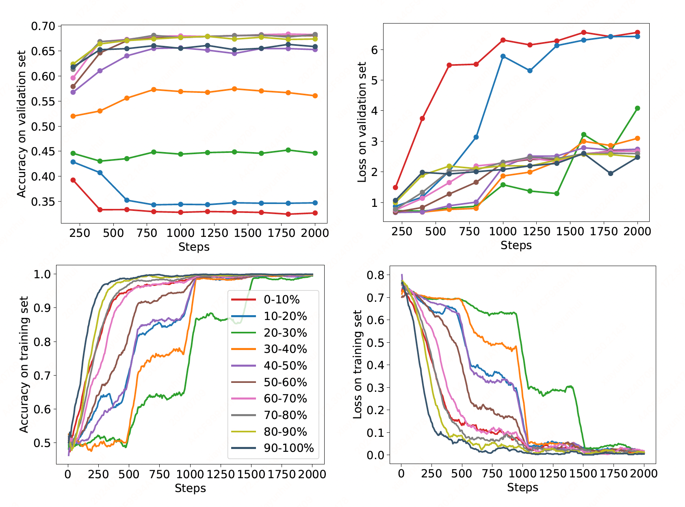

Secrets of RLHF in Large Language Models: Reward Modeling#
Note
While reward models are often considered central to achieving high
performance, they face the following challenges in practice:
Incorrect and ambiguous preference pairs in the dataset may hinder the reward model from accurately capturing human intent.
Reward models trained on data from a specific distribution often struggle to generalize to examples outside that distribution and are not suitable for iterative RLHF training.
Preliminaries#
In the reward modeling stage, the SFT model \(\pi^{\text{SFT}}\) is prompted with a user query denoted as \(x\) to produce two distinct outputs \((y_1,y_2)\sim\pi^{\text{SFT}}(y|x)\). Human labelers are instructed to choose their preferred output, resulting in \(y_c\succ y_r\), where \(y_c\) and \(y_r\) represent the chosen and rejected outputs, respectively, from the pair \((y_1,y_2)\). By following the Bradley-Terry model, we formulate a preference distribution by employing the reward function \(r_{\psi}(x,y)\) as outlined below:
where \(\sigma\) is the logistic function. Treating the problem as a binary classification task yields the negative log-likelihood loss function:
Measuring the Strength of Preferences#
The preference strength (difference) between chosen and rejected responses can be quantified using
We train \(M\) reward models using the same preference data, with the training order randomized. By utilizing the ensemble of reward scores from these \(M\) reward models, we can calculate the mean and standard deviation (std) of preference strength for each comparison pair:
We observe that the mean of preference differences for approximately 25% of the data is less than 0.
Impacts of Different Data on RM Performance#
We can use preference strength to partition the training data into different groups. We are curious about the contributions that different groups of training sets have made to modeling preferences. We train a reward model from scratch for each group, where each group’s data size is 10% of the original training data size, and then evaluate its performance on the validation set.

According to the results, we can observe that:
For the top 20% of data with the lowest preference strength, they have a negative impact on the model’s performance on the validation set.
For data ranked between 20% and 40%, after training, the model’s prediction accuracy on the validation set is approximately 0.5.
The remaining data significantly improves the model’s performance. However, the top 10% of data with the highest preference strength does not achieve the best performance when trained alone.
Based on the above results, we can roughly categorize preference data into three types: incorrect data, ambiguous data (almost no difference), and normal data (clear differences).
Analyze and Leverage Diverse Data to its Fullest Potential#
Flipping the Labels#
By flipping the labels of the bottom 20% of data with the lowest preference strength, the model could more effectively learn preference information for modeling, as demonstrated below.
Label Smoothing#
Label smoothing is another widely known technique to mitigate the overfitting problem by penalizing overconfident model outputs:
where \(\alpha\) is the smoothing parameter.
Adaptive Margin#
Using preference strength information, we can guide the reward model to assign more discrepant scores to responses with higher preference strength, which has been shown to be beneficial for preference modeling. Therefore, we add an adaptive margin component to the loss of the reward model:
where the marginal function \(\hat{u}(x,y)\) serves as a continuous measure of preference strength. Adding a margin to all the data effectively enhances the performance of preference modeling:
Takeaways#
Label Flipping and Label Smoothing can effectively avoid the impact of noisy preferences and improve performance, provided that you can accurately identify noisy preference data.
When learning data with strong preference strength, the reward model may be prone to overfitting, which can be mitigated by using Label Smoothing.
Adaptive margin almost always benefits all preference data and can be widely applied to reward modeling.
How to Better Model Human Preference?#
In this report, we mainly consider four methods to improve reward modeling. In our practical experiments, these methods show improvements over the original reward modeling method:
Flip: Flip the noise data labels in the preference data.
Margin: Add an adaptive margin to the loss function for all preference pairs.
Flip + Margin: Flip the noise data labels in the preference data and add an adaptive margin to the loss function for all preference pairs.
Soft Label + Margin: Apply label smoothing to data with the preference strength less than 0 and add an adaptive margin to the loss function for all preference pairs.

Caution
Apply label smoothing to data with the preference strength less than 0 need first flip the labels?